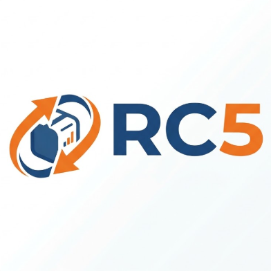
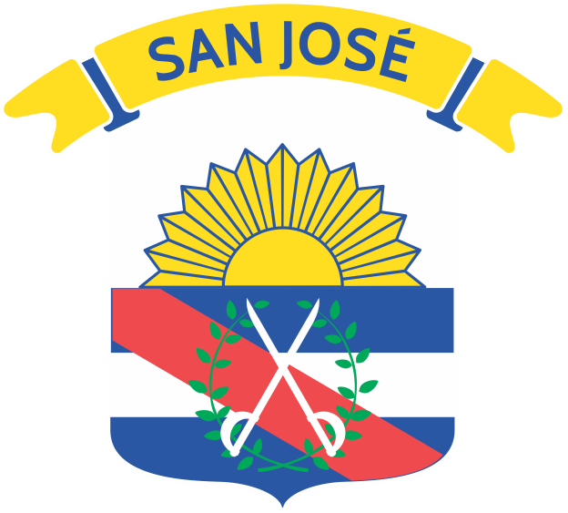
Defensa del proyecto
Portal Vial
Dos necesidades. Una conexión.
Quiero sacar
la libreta
¿Dónde
estudio?
El problema
Información
dispersa
Necesitamos
llegar
ENCONTRAR
LLEGAR
Punto de encuentro
Una misma
brecha
Portal Vial
Un único punto de encuentro.
Portal ciudadano
Estudiar
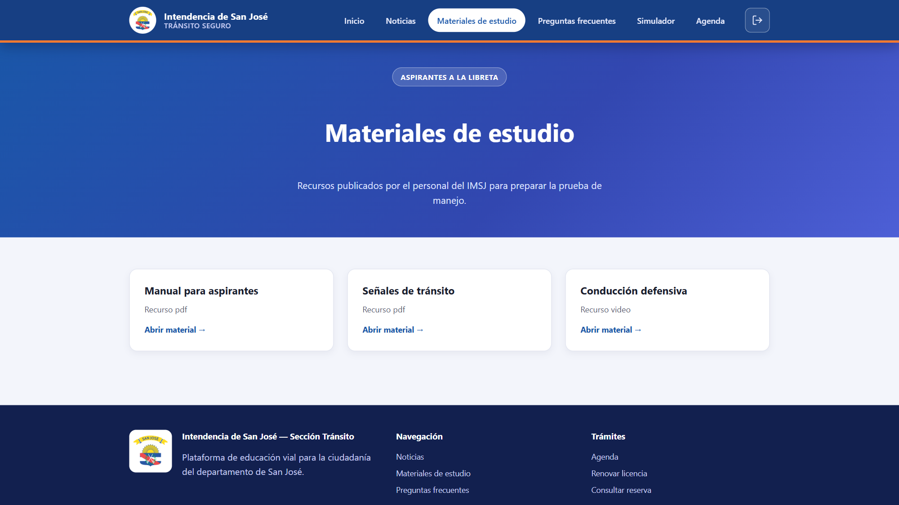
Portal ciudadano
Informarse
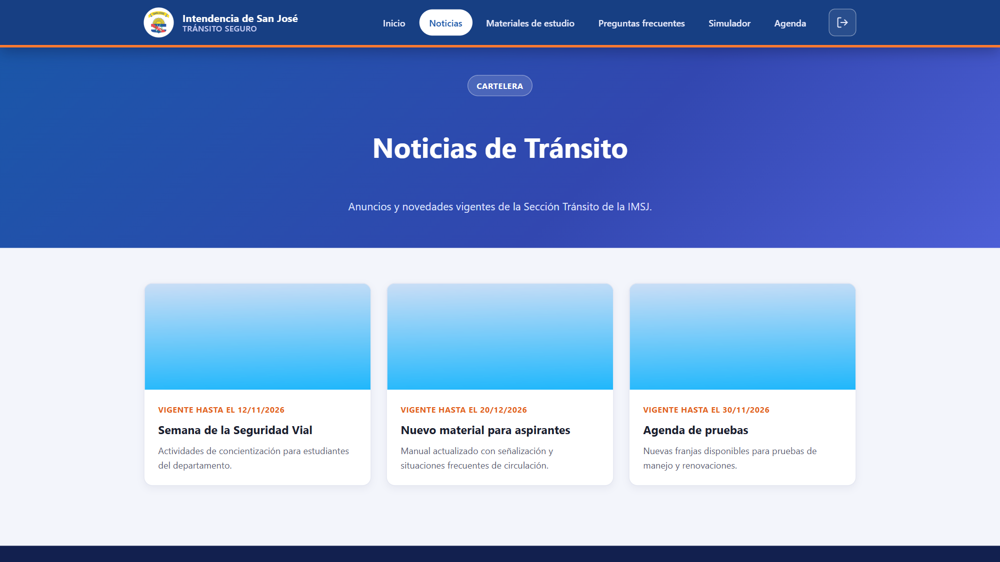
Portal ciudadano
Resolver
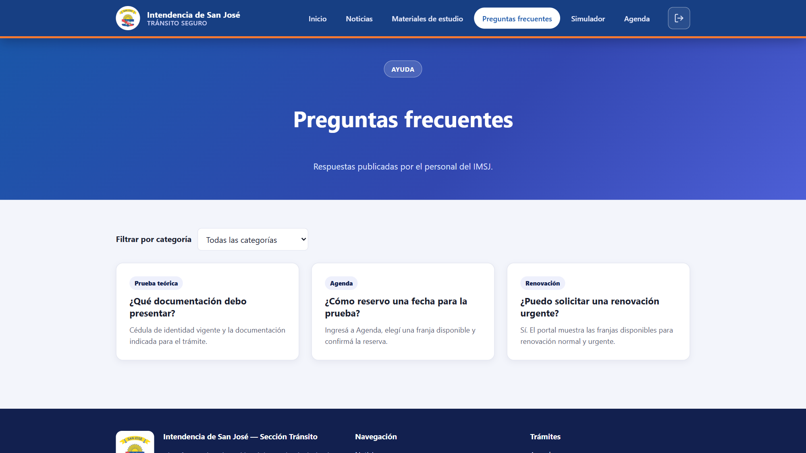
Si no está respondido
Preguntar
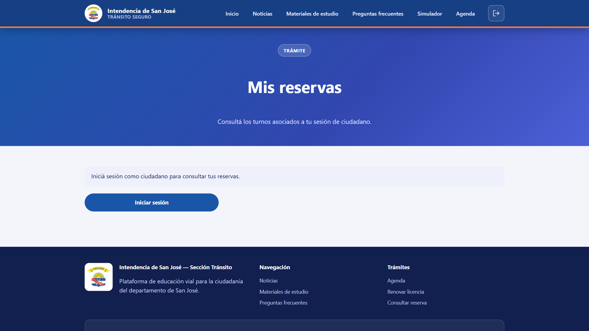
Portal ciudadano
Practicar
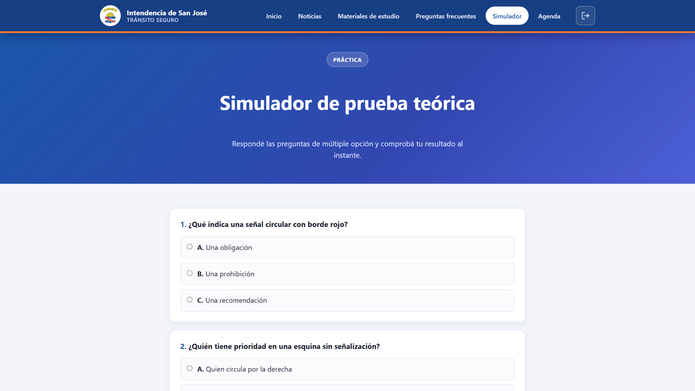
Portal ciudadano
Reservar
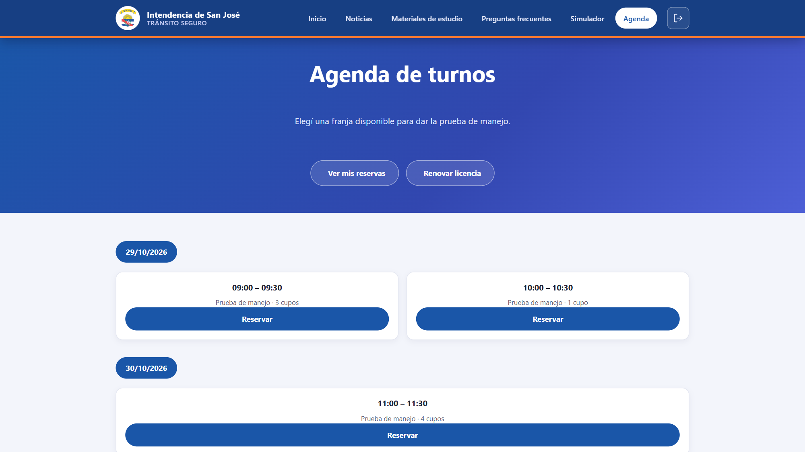
Panel IMSJ
Gestionar
Contenido y operación.
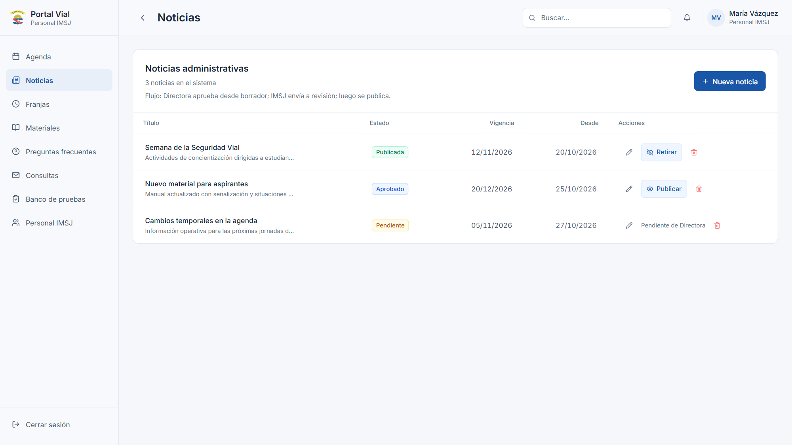
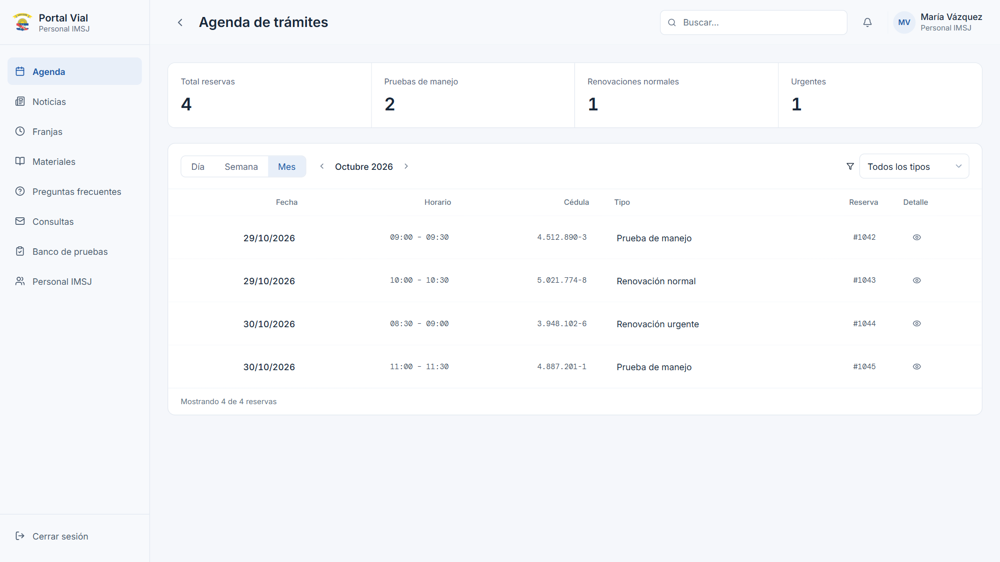
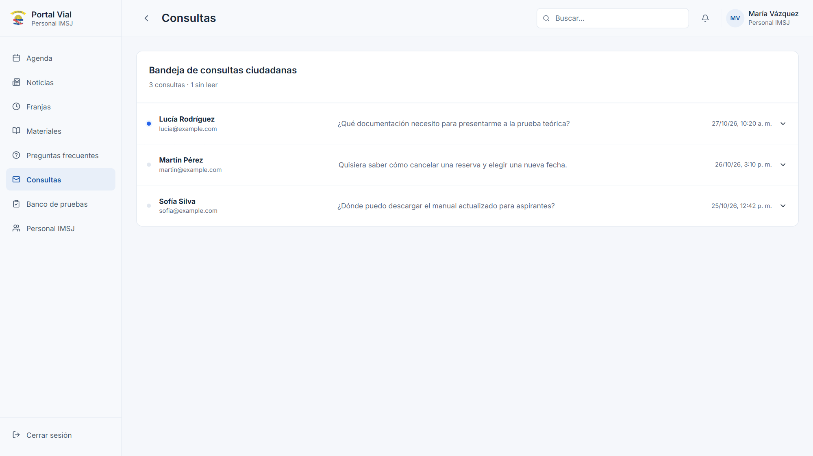
Un solo
sistema
Dos experiencias.
Proceso
Nada sale
de la nada
Paso a paso
Relevamiento
09 JUL
Entrevista
Puesta en limpio
Requisitos
22–28 JUL
Historias
Sprints 1–4
AnalizarDiseñarConstruirProbarIntegrarMostrar
Validación
03 SEP
Primera demo
Feedback registrado
Cambios
Consultas · Aprobación · Imágenes
CC-03
Aprobar
≠ publicar
Cambios implementados
Sprint 5
Cierre del ciclo
13 OCT
Segunda demo
Ingeniería
¿Cómo lo
hicimos?
Capas
Tecnologías
Portal Vial
HTML · CSS · JS
PHP 8.5
PDO · MySQL
Docker
POST /api/reservas
turnos.js
index.php
Controller
Service
Repository
201
Un último
cupo
Aprobación editorial
BORRADOR
PENDIENTE
APROBADO
PUBLICADO
Editar reinicia el ciclo.
Despliegue
Ubuntu · Docker · 2 servicios
Seguridad
por capas
SAST · DAST · Nmap · API
192
comprobaciones de integración
46
rutas del sistema
43
comprobaciones de seguridad
201 / 422
dos solicitudes · un último cupo
Prueba de carga
90 sesiones
Pendiente de medición.
Dos necesidades.
Una solución.
Portal Vial